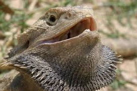

GENUS: POGONA
Pogona is a genus of reptiles containing eight lizard species (though some sources say nine or ten) which are often known by the common name bearded dragons. The name "bearded dragon" refers to the "beard" of the dragon, the underside of the throat, which can turn black for a number of reasons, most often as a result of stress.
They are a semi-arboreal species, spending significant amounts of time on branches, in bushes, and near human habitation. Pogona species bask on rocks and exposed branches in the mornings and afternoons.
They are found throughout much of Australia in a wide range of habitats such as deserts, shrublands and Eucalyptus woodlands.